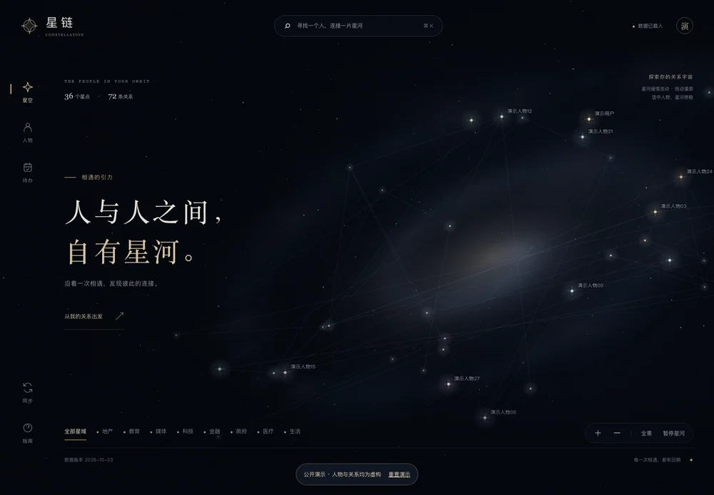
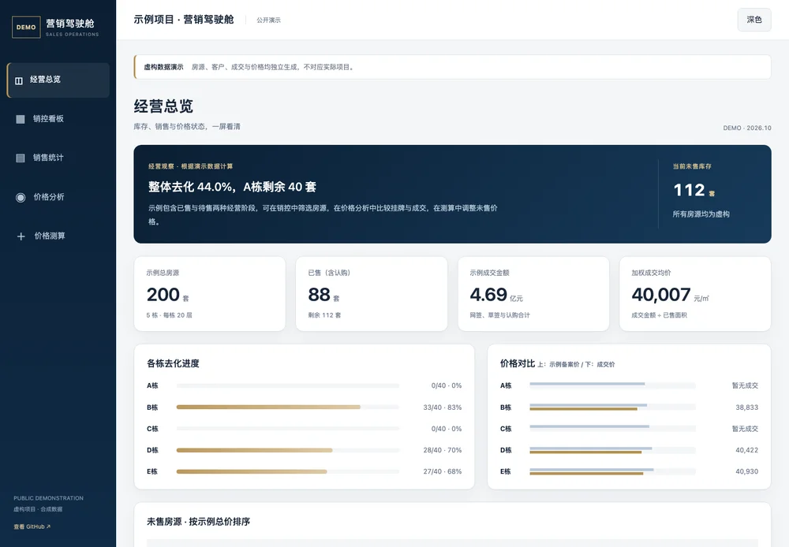

你好，我是
关于我 ABOUT
做策略，也做创作。
曾在地产行业担任总裁秘书，目前从事深圳湾项目营销工作。关注内容策略、AI 应用，也喜欢摄影与创作。
工作之外喜欢摄影，也用 AI 做些创作和工具。
看看 AI 实践 ↗学习与连接 LEARNING
硕士
北师香港浸会大学
影视与新媒体制片管理
学士
深圳大学
广告学
深圳大学学生导师
深圳大学传播学院校友会理事
AI 实践 PROJECTS & TOOLS
AI 创作与工具
从摄影二创到工作中的小工具。
一些已经做出来的尝试。
摄影二创 Skill
第二世界
让照片中的风景延伸到纸面，与手绘人物发生联系。一套从读图到创作的中文方法。


价值到故事。研究 · 定位 · 表达 · 验收
SELECTED PHOTOGRAPHS
摄影作品
左右滑动，看看更多作品
点击作品，查看完整画面。
与 AI 同行
凡益之道，与时偕行。——《周易·益卦·彖传》
持续学习，迎向变化，与时代共同成长。
Let’s talk.
聊项目、AI 创作，或交换一些摄影里的想法。